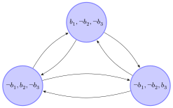
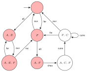
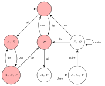
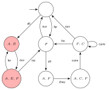
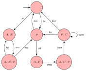

2A ST5 - Cursus Ingénieurs CentraleSupelec Conception et vérification de systèmes critiques - 2025/2026
Travaux dirigés - TD
Présentation des logiques temporelles CTL-LTL
Modélisation
Exercice 1 : Modélisation - Autocommutateur
Soit un système alimenté par 3 batteries. Entre chaque batterie et le système se trouve un interrupteur.
Un programme commutateur permet de jouer sur ces 3 interrupteurs à intervalles réguliers pour commuter
ou non les batteries et éviter qu'une même batterie ne débite trop longtemps mais aussi pour éviter
les surcharges si plusieurs batteries débitaient en même temps (court-circuit).
Question 1. Faire un dessin du système.
Question 2. En vous basant sur 3 propriétés booléennes (une par interrupteur),
exprimez les propriétés suivantes :
pas de court-circuit,
continuité de l'alimentation,
changement de batterie d'un état à l'état suivant.
Question 3. En étiquetant les états avec les propriétés (i.e. un état est défini par
la valeur booléenne de chacun des interrupteurs), donner un système de transition du commutateur
qui en respecte les propriétés.
continuité de l'alimentation,
$b_1 \vee b_2 \vee b_3$
changement de batterie d'un état à l'état suivant. pas possible avec une formule propositionnelle
$\bigvee_{i \neq j \neq k \in \{1,2,3\}} (b_i \wedge \neg b_j \wedge \neg b_k) \Rightarrow \text{X} (\neg b_i \wedge b_j \wedge \neg b_k)$
Question 3.

Logiques temporelles
Exercice 2 : LTL
Question 1
Ecrire les formules LTL caractérisant les 2 phrases suivantes :
Equité faible. : "Si une action $a$ est finalement pour toujours activée, alors elle sera infiniment souvent exécutée"
Equité forte. : "Si une action $a$ est infiniment souvent activée, alors elle sera infiniment souvent exécutée"
On dénotera le fait qu'une action $a$ est possible par la variable propositionnelle $enabled_a$ et le fait
qu'elle sera prise en compte, par la variable propositionnelle $executed_a$.
On va voir que certains connecteurs sont redondants.
Exprimer le connecteur $\text{G}$ en fonction des connecteurs $\neg$, et $\text{F}$.
Exprimer le connecteur $\text{F}$ en fonction du connecteur $\text{U}$.
$\text{G} ~\phi \equiv \neg \text{F} ~ \neg \phi$
$\text{F} ~ \phi \equiv True ~ \text{U} ~ \phi$
Question 3
On ajoute à la logique LTL les connecteurs supplémentaires suivants :
$\varphi_1~W~\varphi_2$ (weak until) signifie que $\varphi_1$ est vraie jusqu'à ce que $\varphi_2$
soit vraie, mais $\varphi_2$ n'est pas forcément vraie à un moment. Dans ce cas-là, $\varphi_1$ doit être vraie
tout le long de l'exécution.
$\text{F}^\infty~\varphi$ (infiniment souvent) signifie que $\varphi$ est infiniment vraie au long de l'exécution.
$\text{G}^\infty~\varphi$ (presque toujours ou finalement pour toujours) signifie que $\varphi$ est toujours vraie à partir d'un moment donné.
$\varphi_1~\bigcup_{\leq_k}~\varphi_2$ (until borné) signifie que $\varphi_1$ est vraie jusqu'à ce que $\varphi_2$
soit vraie, et $\varphi_2$ est vraie dans au plus $k$ états consécutifs de l'exécution.
$\varphi_1~R~\varphi_2$ (release) signifie que $\varphi_2$ est vraie jusqu'au (et inclus) premier état où
$\varphi_1$ est vraie, sachant que $\varphi_1$ n'est pas forcément vraie un jour.
Exprimer ces nouveaux connecteurs en fonction des connecteurs de LTL.
Dans cet exercice, on va exprimer des propriétés dans la logique LTL où les formules élémentaires seront de simples
variables propositionnelles (i.e. des variables dont les valeurs sont vrai ou faux) choisies dans l'ensemble $\{p,q,p_1,p_2,q_1,q_2\}$.
Ainsi pour exprimer la propriété en LTL "Un jour il y aura $p$", on écrit la formule $\text{F} p$. Exprimer en LTL les propriétés suivantes :
Il y a toujours $p$.
Il y a $p$ une infinité de fois.
Il n'y a jamais $p$ et $q$ simultanément.
Après chaque occurrence de $p$ il y a au moins une occurrence de $q$.
S'il y a une infinité de $p_1$ et une infinité de $p_2$ alors toute occurrence de $q_1$ est suivie d'une occurrence de $q_2$.
Avant chaque occurrence de $p$ il y a au moins une occurrence de $q$.
Entre chaque paire d'occurrence de $p$ il y a au moins une occurrence de $q$.
Il y a toujours $p$ :
$\text{G} ~ p$
Il y a $p$ une infinité de fois :
$\text{G} \text{F} ~ p$
Il n'y a jamais $p$ et $q$ simultanément :
$\text{G} \neg (p \land q)$
Après chaque occurrence de $p$ il y a au moins une occurrence de $q$ :
$\text{G} (p \Rightarrow \text{F} ~q)$
S'il y a une infinité de $p_1$ et une infinité de $p_2$ alors toute occurrence de $q_1$ est suivie d'une occurrence de $q_2$ :
$\text{G} \text{F} ~ p_1 \wedge \text{G} \text{F} ~ p_2 \Rightarrow \text{G}(q_1 \Rightarrow \text{F} ~ q_2)$
Avant chaque occurrence de $p$ il y a au moins une occurrence de $q$ :
$\text{G}(\neg (\neg q~\bigcup~p))$
$\neg~p ~W~ q$
Entre chaque paire d'occurrence de $p$ il y a au moins une occurrence de $q$ :
$\text{G} (p \Rightarrow \text{X}(\neg p~W~q))$
$\text{G} (p \wedge \text{X} \text{F} ~ p \Rightarrow \text{X}(\neg p~\bigcup~q))$
$\text{G} (p \Rightarrow \text{X}(\text{G} \neg p \vee (\text{F} ~p \Rightarrow \text{X}(\neg p~\bigcup~q))))$
Exercice 3 : CTL
Question 1
Exprimer en tenant compte des quantificateurs $A$ et $E$ sur les chemins les propriétés d'accessibilité,
d'invariance, de sûreté et de vivacité dont on rappelle les définitions ici:
Accessibilité. Une certaine situation peut être atteinte, e.g.
le compteur $x$ peut prendre la valeur $0$ (i.e. il existe un état atteignable où $x = 0$)
le point final du programme peut être atteint.
Sûreté. Quelque chose de mauvais n'arrive jamais, e.g.
chaque fois que j'utilise un unlock, j'ai utilisé un lock avant;
Chaque fois que j'accède à mon compte, j'ai entré le bon code au préalable;
Quand la pré-condition du programme est respectée et que le programme termine
alors la post-condition est respectée.
Vivacité. Quelque chose de bon finira par arriver, e.g.
Quand une impression est lancée, elle finira par s'achever;
Quand un message est envoyé, il finira par être reçu;
Quand la pré-condition du programme est respectee, alors le programme
termine et la post-condition est respectée.
Équité. Quelque chose se répétera infiniment souvent, e.g., si
un processus demande son exécution, il finira par l'avoir.
Accessibilité. $E F \varphi$
Sûreté. $A G \neg \varphi$
Vivacité. $A F \varphi$
Équité. $A G A F \varphi$
Question 2
On rappelle pour cet exercice qu'un modèle de Kripke est défini par un ensemble d'états $S$,
une relation binaire $R \subseteq S \times S$ (il n'y a pas d'actions) et une application $\lambda : S \to 2^P$ où
$P$ est un ensemble de variables propositionnelles. Ainsi, étant donné un état $s \in S$, $\lambda(s)$ contient
l'ensemble des variables propositionnelles qui sont vraies pour cet état.
Soit $P = \{p\}$ un ensemble de variables propositionnelles.
Donner un modèle de Kripke non trivial (i.e. non réduit à un état) comme défini ci-dessus pour chacune des formules CTL suivantes :
$$AGp,\ EGp,\ AFp, \ EFp, AGEXp, \ EGEFp$$
Donner une formule CTL exprimant la propiété suivante : Quoique je fasse maintenant (i.e. quelque soit la transition que je passe), je garde la possibilité de vérifier $p$ dans le futur.
2.1 Plusieurs solutions possibles (voir la correction donnée par le chargé de TD en classe) 2.2Quoique je fasse maintenant (i.e. quelque soit la transition que je passe), je garde la possibilité de vérifier $p$ dans le futur.
$$AXEF ~p$$
Question 3
Soient $p$,$q$,$r$ des propositions atomiques. Exprimer les propriétés suivantes.
Tous les états satisfont $p$.
On peut atteindre $p$ par un chemin où $q$ est toujours vrai.
Quelque soit l'état, on finit par atteindre un état qui satisfait $p$.
Quelque soit l'état, on peut atteindre un état qui satisfait $p$.
Quoique je fasse maintenant, je garde la possibilité de faire $p$ dans le futur.
Quelque soit l'exécution, tout $p$ sera inévitablement suivi d'un $q$.
Quelque soit l'exécution, tout $p$ sera inévitablement suivi d'un $q$ dans un futur strict.
Chaque $q$ impose que $p$ devienne vrai avant une éventuelle occurrence de $r$.
Tous les états satisfont $p$. $AG~p$
On peut atteindre $p$ par un chemin où $q$ est toujours vrai. $E(q ~U~ (q \land p))$
Quelque soit l'état, on finit par atteindre un état qui satisfait $p$. $AGAF~p$
Quelque soit l'état, on peut atteindre un état qui satisfait $p$. $AGEF~p$
Quoique je fasse maintenant, je garde la possibilité de faire $p$ dans le futur. $AXEF~p$
Quelque soit l'exécution, tout $p$ sera inévitablement suivi d'un $q$. $AG (p ~\Rightarrow~ AF ~q) $
Quelque soit l'exécution, tout $p$ sera inévitablement suivi d'un $q$ dans un futur strict. $AG (p ~\Rightarrow~ AXAF ~q) $
Chaque $q$ impose que $p$ devienne vrai avant une éventuelle occurrence de $r$. $AG(q ~\Rightarrow~ A(\neg r ~U~ p)) $
Question 4
Soit le système de transitions de la figure suivante représentant le fonctionnement d'un four électrique.
(A : allumé; E : erreur; F : fermé; C : chauffé; all : allumage; ouv : ouverture; fer : fermeture;
fin : fin; cuire : cuire; raz : remise à zero.)
On veut vérifier, si ce système satisfait la propriété (si le four est allumé alors il finira par être chauffé).
$$ AG~(A ~\Rightarrow~ AF ~C) \equiv \neg (EF ~(A \land EG~ \neg C))$$
On procède de la façon suivante : on marque tous les états qui satisfont les sous-formules
en commençant à l'intérieur.
Marquer tous les états qui satisfont $\neg C$.
Marquer tous les états qui satisfont $EG~ \neg C$.
Marquer tous les états qui satisfont $A \land EG~ \neg C$.
Marquer tous les états qui satisfont $EF ~(A \land EG~ \neg C)$.
Marquer enfin tous les états qui satisfont toute la propriété.
Marquer tous les états qui satisfont $\neg C$.

Marquer tous les états qui satisfont $EG~ \neg C$.

Marquer tous les états qui satisfont $A \land EG~ \neg C$.

Marquer tous les états qui satisfont $EF ~(A \land EG~ \neg C)$.

Marquer enfin tous les états qui satisfont $\neg (EF ~(A \land EG~ \neg C))$.
2A ST5 - Cursus Ingénieurs CentraleSupelec Conception et vérification de systèmes critiques - 2025/2026